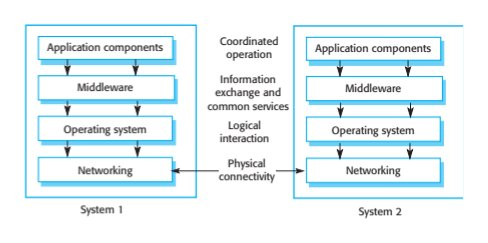
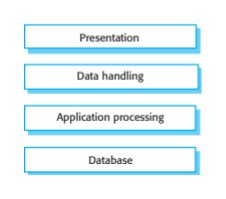
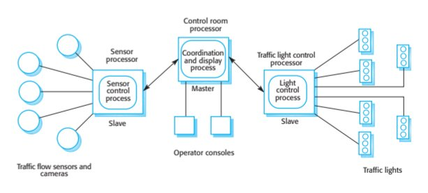
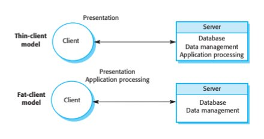
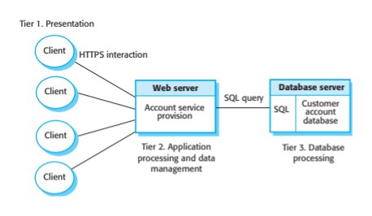
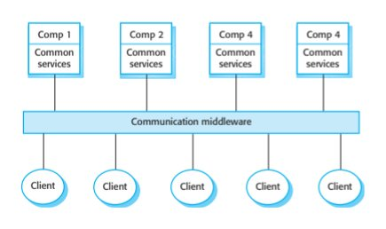
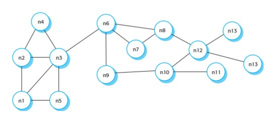
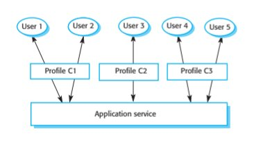
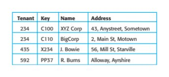

Chapter 17 · Distributed Software Engineering
Source review
The original source text, examples, tables and caveats remain available. Source slide numbers and textbook PDF pages are different references. Historical assertions stay attributed to this edition; this page is not a current legal, medical, regulatory or product guide. Classroom activities are labelled separately.
Required selections
- Distributed architectural patterns: original slides 29–34
- SaaS and service delivery: original slides 53–58
Apply one named source concept to the chapter artifact and explain its effect. Finish any uncompleted core topic here; material does not become optional merely because it is reviewed after class. Assignment dates and marks remain in Blackboard.
Original source-slide ledger
Slide 1 · Chapter 17 – Distributed software engineering
Slide 2 · Topics covered
Topics covered Distributed systems Client–server computing Architectural patterns for distributed systems Software as a service
Slide 3 · Distributed systems
Distributed systems Virtually all large computer-based systems are now distributed systems. “… a collection of independent computers that appears to the user as a single coherent system.” Information processing is distributed over several computers rather than confined to a single machine. Distributed software engineering is therefore very important for enterprise computing systems.
Slide 4 · Distributed system characteristics
Distributed system characteristics Resource sharing Sharing of hardware and software resources. Openness Use of equipment and software from different vendors. Concurrency Concurrent processing to enhance performance. Scalability Increased throughput by adding new resources. Fault tolerance The ability to continue in operation after a fault has occurred.
Slide 5 · Distributed systems
Distributed systems
Slide 6 · Distributed systems issues
Distributed systems issues Distributed systems are more complex than systems that run on a single processor. Complexity arises because different parts of the system are independently managed as is the network. There is no single authority in charge of the system so top-down control is impossible.
Slide 7 · Design issues
Design issues Transparency To what extent should the distributed system appear to the user as a single system? Openness Should a system be designed using standard protocols that support interoperability? Scalability How can the system be constructed so that it is scaleable? Security How can usable security policies be defined and implemented? Quality of service How should the quality of service be specified. Failure management How can system failures be detected, contained and repaired?
Slide 8 · Transparency
Transparency Ideally, users should not be aware that a system is distributed and services should be independent of distribution characteristics. In practice, this is impossible because parts of the system are independently managed and because of network delays. Often better to make users aware of distribution so that they can cope with problems To achieve transparency, resources should be abstracted and addressed logically rather than physically. Middleware maps logical to physical resources.
Slide 9 · Openness
Openness Open distributed systems are systems that are built according to generally accepted standards. Components from any supplier can be integrated into the system and can inter-operate with the other system components. Openness implies that system components can be independently developed in any programming language and, if these conform to standards, they will work with other components. Web service standards for service-oriented architectures were developed to be open standards.
Slide 10 · Scalability
Scalability The scalability of a system reflects its ability to deliver a high quality service as demands on the system increase Size It should be possible to add more resources to a system to cope with increasing numbers of users. Distribution It should be possible to geographically disperse the components of a system without degrading its performance. Manageability It should be possible to manage a system as it increases in size, even if parts of the system are located in independent organizations. There is a distinction between scaling-up and scaling-out. Scaling up is more powerful system; scaling out is more system instances.
Slide 11 · Security
Security When a system is distributed, the number of ways that the system may be attacked is significantly increased, compared to centralized systems. If a part of the system is successfully attacked then the attacker may be able to use this as a ‘back door’ into other parts of the system. Difficulties in a distributed system arise because different organizations may own parts of the system. These organizations may have mutually incompatible security policies and security mechanisms.
Slide 12 · Types of attack
Types of attack The types of attack that a distributed system must defend itself against are: Interception, where communications between parts of the system are intercepted by an attacker so that there is a loss of confidentiality. Interruption, where system services are attacked and cannot be delivered as expected. Denial of service attacks involve bombarding a node with illegitimate service requests so that it cannot deal with valid requests. Modification, where data or services in the system are changed by an attacker. Fabrication, where an attacker generates information that should not exist and then uses this to gain some privileges.
Slide 13 · Quality of service
Quality of service The quality of service (QoS) offered by a distributed system reflects the system’s ability to deliver its services dependably and with a response time and throughput that is acceptable to its users. Quality of service is particularly critical when the system is dealing with time-critical data such as sound or video streams. In these circumstances, if the quality of service falls below a threshold value then the sound or video may become so degraded that it is impossible to understand.
Slide 14 · Failure management
Failure management In a distributed system, it is inevitable that failures will occur, so the system has to be designed to be resilient to these failures. “You know that you have a distributed system when the crash of a system that you’ve never heard of stops you getting any work done.” Distributed systems should include mechanisms for discovering if a component of the system has failed, should continue to deliver as many services as possible in spite of that failure and, as far as possible, automatically recover from the failure.
Slide 15 · Models of interaction
Models of interaction Two types of interaction between components in a distributed system Procedural interaction, where one computer calls on a known service offered by another computer and waits for a response. Message-based interaction, involves the sending computer sending information about what is required to another computer. There is no necessity to wait for a response.
Slide 16 · Procedural interaction between a diner and a waiter
Procedural interaction between a diner and a waiter
Slide 17 · Message-based interaction between a waiter and the kitchen
Message-based interaction between a waiter and the kitchen <starter> <dish name = “soup” type = “tomato” /> <dish name = “soup” type = “fish” /> <dish name = “pigeon salad” /> </starter> <main course> <dish name = “steak” type = “sirloin” cooking = “medium” /> <dish name = “steak” type = “fillet” cooking = “rare” /> <dish name = “sea bass”> </main> <accompaniment> <dish name = “french fries” portions = “2” /> <dish name = “salad” portions = “1” /> </accompaniment>
Slide 18 · Remote procedure calls
Remote procedure calls Procedural communication in a distributed system is implemented using remote procedure calls (RPC). In a remote procedure call, one component calls another component as if it was a local procedure or method. The middleware in the system intercepts this call and passes it to a remote component. This carries out the required computation and, via the middleware, returns the result to the calling component. A problem with RPCs is that the caller and the callee need to be available at the time of the communication, and they must know how to refer to each other.
Slide 19 · Message passing
Message passing Message-based interaction normally involves one component creating a message that details the services required from another component. Through the system middleware, this is sent to the receiving component. The receiver parses the message, carries out the computations and creates a message for the sending component with the required results. In a message-based approach, it is not necessary for the sender and receiver of the message to be aware of each other. They simple communicate with the middleware.
Slide 20 · Middleware
Middleware The components in a distributed system may be implemented in different programming languages and may execute on completely different types of processor. Models of data, information representation and protocols for communication may all be different. Middleware is software that can manage these diverse parts, and ensure that they can communicate and exchange data.
Slide 21 · Middleware in a distributed system
Middleware in a distributed system
Slide 22 · Middleware support
Middleware support Interaction support, where the middleware coordinates interactions between different components in the system The middleware provides location transparency in that it isn’t necessary for components to know the physical locations of other components. The provision of common services, where the middleware provides reusable implementations of services that may be required by several components in the distributed system. By using these common services, components can easily inter-operate and provide user services in a consistent way.
Slide 23 · Client-server computing
Client-server computing
Slide 24 · Client-server computing
Client-server computing Distributed systems that are accessed over the Internet are normally organized as client-server systems. In a client-server system, the user interacts with a program running on their local computer (e.g. a web browser or mobile application). This interacts with another program running on a remote computer (e.g. a web server). The remote computer provides services, such as access to web pages, which are available to external clients.
Slide 25 · Client–server interaction
Client–server interaction
Slide 26 · Mapping of clients and servers to networked computers
Mapping of clients and servers to networked computers
Slide 27 · Layered architectural model for client–server applications
Layered architectural model for client–server applications
Slide 28 · Layers in a client/server system
Layers in a client/server system Presentation concerned with presenting information to the user and managing all user interaction. Data handling manages the data that is passed to and from the client. Implement checks on the data, generate web pages, etc. Application processing layer concerned with implementing the logic of the application and so providing the required functionality to end users. Database Stores data and provides transaction management services, etc.
Slide 29 · Architectural patterns for distributed systems
Architectural patterns for distributed systems
Slide 30 · Architectural patterns
Architectural patterns Widely used ways of organizing the architecture of a distributed system: Master-slave architecture, which is used in real-time systems in which guaranteed interaction response times are required. Two-tier client-server architecture, which is used for simple client-server systems, and where the system is centralized for security reasons. Multi-tier client-server architecture, which is used when there is a high volume of transactions to be processed by the server. Distributed component architecture, which is used when resources from different systems and databases need to be combined, or as an implementation model for multi-tier client-server systems. Peer-to-peer architecture, which is used when clients exchange locally stored information and the role of the server is to introduce clients to each other
Slide 31 · Master-slave architectures
Master-slave architectures Master-slave architectures are commonly used in real-time systems where there may be separate processors associated with data acquisition from the system’s environment, data processing and computation and actuator management. The ‘master’ process is usually responsible for computation, coordination and communications and it controls the ‘slave’ processes. ‘Slave’ processes are dedicated to specific actions, such as the acquisition of data from an array of sensors.
Slide 32 · A traffic management system with a master-slave architecture
A traffic management system with a master-slave architecture
Slide 33 · Two-tier client server architectures
Two-tier client server architectures In a two-tier client-server architecture, the system is implemented as a single logical server plus an indefinite number of clients that use that server. Thin-client model, where the presentation layer is implemented on the client and all other layers (data management, application processing and database) are implemented on a server. Fat-client model, where some or all of the application processing is carried out on the client. Data management and database functions are implemented on the server.
Slide 34 · Thin- and fat-client architectural models
Thin- and fat-client architectural models
Slide 35 · Thin client model
Thin client model Used when legacy systems are migrated to client server architectures. The legacy system acts as a server in its own right with a graphical interface implemented on a client. A major disadvantage is that it places a heavy processing load on both the server and the network.
Slide 36 · Fat client model
Fat client model More processing is delegated to the client as the application processing is locally executed. Most suitable for new C/S systems where the capabilities of the client system are known in advance. More complex than a thin client model especially for management. New versions of the application have to be installed on all clients.
Slide 37 · A fat-client architecture for an ATM system
A fat-client architecture for an ATM system
Slide 38 · Thin and fat clients
Thin and fat clients Distinction between thin and fat client architectures has become blurred Javascript allows local processing in a browser so ‘fat-client’ functionality available without software installation Mobile apps carry out some local processing to minimize demands on network Auto-update of apps reduces management problems There are now very few thin-client applications with all processing carried out on remote server.
Slide 39 · Multi-tier client-server architectures
Multi-tier client-server architectures In a ‘multi-tier client–server’ architecture, the different layers of the system, namely presentation, data management, application processing, and database, are separate processes that may execute on different processors. This avoids problems with scalability and performance if a thin-client two-tier model is chosen, or problems of system management if a fat-client model is used.
Slide 40 · Three-tier architecture for an Internet banking system
Three-tier architecture for an Internet banking system
Slide 41 · Use of client–server architectural patterns
Use of client–server architectural patterns
Slide 42 · Use of client–server architectural patterns
Use of client–server architectural patterns
Slide 43 · Distributed component architectures
Distributed component architectures There is no distinction in a distributed component architecture between clients and servers. Each distributable entity is a component that provides services to other components and receives services from other components. Component communication is through a middleware system.
Slide 44 · A distributed component architecture
A distributed component architecture
Slide 45 · Benefits of distributed component architecture
Benefits of distributed component architecture It allows the system designer to delay decisions on where and how services should be provided. It is a very open system architecture that allows new resources to be added as required. The system is flexible and scalable. It is possible to reconfigure the system dynamically with objects migrating across the network as required.
Slide 46 · A distributed component architecture for a data mining system
A distributed component architecture for a data mining system
Slide 47 · Disadvantages of distributed component architecture
Disadvantages of distributed component architecture Distributed component architectures suffer from two major disadvantages: They are more complex to design than client–server systems. Distributed component architectures are difficult for people to visualize and understand. Standardized middleware for distributed component systems has never been accepted by the community. Different vendors, such as Microsoft and Sun, have developed different, incompatible middleware. As a result of these problems, service-oriented architectures are replacing distributed component architectures in many situations.
Slide 48 · Peer-to-peer architectures
Peer-to-peer architectures Peer to peer (p2p) systems are decentralised systems where computations may be carried out by any node in the network. The overall system is designed to take advantage of the computational power and storage of a large number of networked computers. Most p2p systems have been personal systems but there is increasing business use of this technology.
Slide 49 · Peer-to-peer systems
Peer-to-peer systems File sharing systems based on the BitTorrent protocol Messaging systems such as Jabber Payments systems – Bitcoin Databases – Freenet is a decentralized database Phone systems – Viber Computation systems - SETI@home
Slide 50 · P2p architectural models
P2p architectural models The logical network architecture Decentralised architectures; Semi-centralised architectures. Application architecture The generic organisation of components making up a p2p application. Focus here on network architectures.
Slide 51 · A decentralized p2p architecture
A decentralized p2p architecture
Slide 52 · A semicentralized p2p architecture
A semicentralized p2p architecture
Slide 53 · Software as a service
Software as a service
Slide 54 · Use of p2p architecture
Use of p2p architecture When a system is computationally-intensive and it is possible to separate the processing required into a large number of independent computations. When a system primarily involves the exchange of information between individual computers on a network and there is no need for this information to be centrally-stored or managed.
Slide 55 · Security issues in p2p system
Security issues in p2p system Security concerns are the principal reason why p2p architectures are not widely used. The lack of central management means that malicious nodes can be set up to deliver spam and malware to other nodes in the network. P2P communications require careful setup to protect local information and if not done correctly, then this is exposed to othe peers.
Slide 56 · Software as a service
Software as a service Software as a service (SaaS) involves hosting the software remotely and providing access to it over the Internet. Software is deployed on a server (or more commonly a number of servers) and is accessed through a web browser. It is not deployed on a local PC. The software is owned and managed by a software provider, rather than the organizations using the software. Users may pay for the software according to the amount of use they make of it or through an annual or monthly subscription.
Slide 57 · Key elements of SaaS
Key elements of SaaS Software is deployed on a server (or more commonly a number of servers) and is accessed through a web browser. It is not deployed on a local PC. The software is owned and managed by a software provider, rather than the organizations using the software. Users may pay for the software according to the amount of use they make of it or through an annual or monthly subscription. Sometimes, the software is free for anyone to use but users must then agree to accept advertisements, which fund the software service.
Slide 58 · SaaS and SOA
SaaS and SOA Software as a service is a way of providing functionality on a remote server with client access through a web browser. The server maintains the user’s data and state during an interaction session. Transactions are usually long transactions e.g. editing a document. Service-oriented architecture is an approach to structuring a software system as a set of separate, stateless services. These may be provided by multiple providers and may be distributed. Typically, transactions are short transactions where a service is called, does something then returns a result.
Slide 59 · Implementation factors for SaaS
Implementation factors for SaaS Configurability How do you configure the software for the specific requirements of each organization? Multi-tenancy How do you present each user of the software with the impression that they are working with their own copy of the system while, at the same time, making efficient use of system resources? Scalability How do you design the system so that it can be scaled to accommodate an unpredictably large number of users?
Slide 60 · Configuration of a software system offered as a service
Configuration of a software system offered as a service
Slide 61 · Service configuration
Service configuration Branding, where users from each organization, are presented with an interface that reflects their own organization. Business rules and workflows, where each organization defines its own rules that govern the use of the service and its data. Database extensions, where each organization defines how the generic service data model is extended to meet its specific needs. Access control, where service customers create individual accounts for their staff and define the resources and functions that are accessible to each of their users.
Slide 62 · Multi-tenancy
Multi-tenancy Multi-tenancy is a situation in which many different users access the same system and the system architecture is defined to allow the efficient sharing of system resources. It must appear to each user that they have the sole use of the system. Multi-tenancy involves designing the system so that there is an absolute separation between the system functionality and the system data.
Slide 63 · A multitenant database
A multitenant database
Slide 64 · Scalability
Scalability Develop applications where each component is implemented as a simple stateless service that may be run on any server. Design the system using asynchronous interaction so that the application does not have to wait for the result of an interaction (such as a read request). Manage resources, such as network and database connections, as a pool so that no single server is likely to run out of resources. Design your database to allow fine-grain locking. That is, do not lock out whole records in the database when only part of a record is in use.
Slide 65 · Key points
Key points The benefits of distributed systems are that they can be scaled to cope with increasing demand, can continue to provide user services if parts of the system fail, and they enable resources to be shared. Issues to be considered in the design of distributed systems include transparency, openness, scalability, security, quality of service and failure management. Client–server systems are structured into layers, with the presentation layer implemented on a client computer. Servers provide data management, application and database services. Client-server systems may have several tiers, with different layers of the system distributed to different computers.
Slide 66 · Key points
Key points Architectural patterns for distributed systems include master-slave architectures, two-tier and multi-tier client-server architectures, distributed component architectures and peer-to-peer architectures. Distributed component systems require middleware to handle component communications and to allow components to be added to and removed from the system. Peer-to-peer architectures are decentralized with no distinguished clients and servers. Computations can be distributed over many systems in different organizations. Software as a service is a way of deploying applications as thin client- server systems, where the client is a web browser.
Preserved original source illustrations
Select a figure to inspect it at its original size. The original PDF/PPTX retains its full layout and vector diagrams.









Supplied textbook chapter · complete text
The PDF remains authoritative for mathematical layout, figures and tables. Line wrapping and extraction artifacts may occur below; no textbook statement is replaced by a contemporary claim.
PDF page 1 · printed page 490
17
Distributed software
engineering
Objectives
The objective of this chapter is to introduce distributed systems
engineering and distributed systems architectures. When you have
read this chapter, you will:
■ know the key issues that have to be considered when designing
and implementing distributed software systems;
■ understand the client–server computing model and the layered
architecture of client–server systems;
■ have been introduced to commonly used patterns for distributed
systems architectures and know the types of system for which
each architectural pattern is applicable;
■ understand the notion of software as a service, providing web-
based access to remotely deployed application systems.
Contents
17.1 Distributed systems
17.2 Client–server computing
17.3 Architectural patterns for distributed systems
17.4 Software as a servicePDF page 2 · printed page 491
Chapter 17 ■ Distributed software engineering 491
Most computer-based systems are now distributed systems. A distributed system is one
involving several computers rather than a single application running on a single machine.
Even apparently self-contained applications on a PC or laptop, such as image editors, are
distributed systems. They execute on a single computer system but often rely on remote
cloud systems for update, storage, and other services. Tanenbaum and Van Steen
(Tanenbaum and Van Steen 2007) define a distributed system to be “a collection of
independent computers that appears to the user as a single coherent system.Ӡ
When you are designing a distributed system, there are specific issues that have to
be taken into account simply because the system is distributed. These issues arise
because different parts of the system are running on independently managed com-
puters and because the characteristics of the network, such as latency and reliability,
may have to be considered in your design.
Coulouris et al. (Coulouris et al. 2011) identify the five benefits of developing
systems as distributed systems:
1. Resource sharing A distributed system allows the sharing of hardware and soft-
ware resources—such as disks, printers, files, and compilers—that are associated
with computers on a network.
2. Openness Distributed systems are normally open systems—systems designed
around standard Internet protocols so that equipment and software from different
vendors can be combined.
3. Concurrency In a distributed system, several processes may operate at the same
time on separate computers on the network. These processes may (but need not)
communicate with each other during their normal operation.
4. Scalability In principle at least, distributed systems are scalable in that the capa-
bilities of the system can be increased by adding new resources to cope with
new demands on the system. In practice, the network linking the individual
computers in the system may limit the system scalability.
5. Fault tolerance The availability of several computers and the potential for replicat-
ing information means that distributed systems can be tolerant of some hardware
and software failures (see Chapter 11). In most distributed systems, a degraded
service can be provided when failures occur; complete loss of service only occurs
when there is a network failure.‡
Distributed systems are inherently more complex than centralized systems. This
makes them more difficult to design, implement, and test. It is harder to understand
the emergent properties of distributed systems because of the complexity of the inter-
actions between system components and system infrastructure. For example, rather
than being dependent on the execution speed of one processor, system performance
†Tanenbaum, A. S., and M. Van Steen. 2007. Distributed Systems: Principles and Paradigms, 2nd Ed.
Upper Saddle River, NJ: Prentice-Hall.
‡Coulouris, G., J. Dollimore, T. Kindberg, and G. Blair. 2011. Distributed Systems: Concepts and
Design, 5th Edition. Harlow, UK.: Addison Wesley.PDF page 3 · printed page 492
492 Chapter 17 ■ Distributed software engineering
depends on network bandwidth, network load, and the speed of other computers that
are part of the system. Moving resources from one part of the system to another can
significantly affect the system’s performance.
Furthermore, as all users of the WWW know, distributed systems are unpredictable in
their response. Response time depends on the overall load on the system, its architecture,
and the network load. As all of these factors may change over a short time, the time taken
to respond to a user request may change significantly from one request to another.
The most important developments that have affected distributed software systems in
the past few years are service-oriented systems and the advent of cloud computing,
delivering infrastructure, platforms, and software as a service. In this chapter, I focus on
general issues of distributed systems, and in Section 17.4 I cover the idea of software as
a service. In Chapter 18, I discuss other aspects of service-oriented software engineering.
17.1 Distributed systems
As I discussed in the introduction to this chapter, distributed systems are more complex
than systems that run on a single processor. This complexity arises because it is practi-
cally impossible to have a top-down model of control of these systems. The nodes in the
system that deliver functionality are often independent systems that are managed and
controlled by their owners. There is no single authority in charge of the entire distributed
system. The network connecting these nodes is also a separately managed system. It is a
complex system in its own right and cannot be controlled by the owners of systems
using the network. There is, therefore, an inherent unpredictability in the operation of
distributed systems that has to be taken into account when you are designing a system.
Some of the most important design issues that have to be considered in distrib-
uted systems engineering are:
1. Transparency To what extent should the distributed system appear to the user as a
single system? When is it useful for users to understand that the system is distributed?
2. Openness Should a system be designed using standard protocols that support
interoperability, or should more specialized protocols be used? Although stand-
ard network protocols are now universally used, this is not the case for higher
levels of interaction, such as service communication.
3. Scalability How can the system be constructed so that it is scalable? That is,
how can the overall system be designed so that its capacity can be increased in
response to increasing demands made on the system?
4. Security How can usable security policies be defined and implemented that
apply across a set of independently managed systems?
5. Quality of service How should the quality of service that is delivered to system
users be specified, and how should the system be implemented to deliver an
acceptable quality of service to all users.
6. Failure management How can system failures be detected, contained (so that
they have minimal effects on other components in the system), and repaired?PDF page 4 · printed page 493
17.1 ■ Distributed systems 493
CORBA—Common Object Request Broker Architecture
CORBA was proposed as a specification for a middleware system in the 1990s by the Object Management
Group. It was intended as an open standard that would allow the development of middleware to support dis-
tributed component communications and execution, as well as provide a set of standard services that could be
used by these components.
Several implementations of CORBA were produced, but the system was not widely adopted. Users preferred
proprietary systems such as those from Microsoft or Oracle, or they moved to service-oriented architectures.
http://software-engineering-book.com/web/corba/
In an ideal world, the fact that a system is distributed would be transparent to users.
Users would see the system as a single system whose behavior is not affected by the
way that the system is distributed. In practice, this is impossible to achieve because
there is no central control over the system as a whole. As a result, individual comput-
ers in a system may behave differently at different times. Furthermore, because it
always takes a finite length of time for signals to travel across a network, network
delays are unavoidable. The length of these delays depends on the location of resources
in the system, the quality of the user’s network connection, and the network load.
To make a distributed system transparent (i.e., conceal its distributed nature), you
have to hide the underlying distribution. You create abstractions that hide the system
resources so that the location and implementation of these resources can be changed
without having to change the distributed application. Middleware (discussed in
Section 17.1.2) is used to map the logical resources referenced by a program onto the
actual physical resources and to manage resource interactions.
In practice, it is impossible to make a system completely transparent, and users, gener-
ally, are aware that they are dealing with a distributed system. You may therefore decide
that it is best to expose the distribution to users. They can then be prepared for some of
the consequences of distribution such as network delays and remote node failures.
Open distributed systems are built according to generally accepted standards.
Components from any supplier can therefore be integrated into the system and can
interoperate with the other system components. At the networking level, openness is
now taken for granted, with systems conforming to Internet protocols, but at the
component level, openness is still not universal. Openness implies that system com-
ponents can be independently developed in any programming language and, if these
conform to standards, they will work with other components.
The CORBA standard (Pope 1997), developed in the 1990s, was intended to be
the universal standard for open distributed systems, However, the CORBA standard
never achieved a critical mass of adopters. Rather, many companies preferred to
develop systems using proprietary standards for components from companies such as
Sun (now Oracle) and Microsoft. These provided better implementations and support
software and better long-term support for industrial protocols.
Web service standards (discussed in Chapter 18) for service-oriented architec-
tures were developed to be open standards. However, these standards have met with
significant resistance because of their perceived inefficiency. Many developers of
service-based systems have opted instead for so-called RESTful protocols becausePDF page 5 · printed page 494
494 Chapter 17 ■ Distributed software engineering
these have an inherently lower overhead than web service protocols. The use of
RESTful protocols is not standardized.
The scalability of a system reflects its ability to deliver high-quality service as
demands on the system increase. The three dimensions of scalability are size, distri-
bution, and manageability.
1. Size It should be possible to add more resources to a system to cope with increas-
ing numbers of users. Ideally, then, as the number of users increases, the system
should increase in size automatically to handle the increased number of users.
2. Distribution It should be possible to geographically disperse the components of
a system without degrading its performance. As new components are added, it
should not matter where these are located. Large companies can often make use
of computing resources in their different facilities around the world.
3. Manageability It should be possible to manage a system as it increases in size,
even if parts of the system are located in independent organizations. This is one
of the most difficult challenges of scale as it involves managers communicating
and agreeing on management policies. In practice, the manageability of a sys-
tem is often the factor that limits the extent to which it can be scaled.
Changing the size of a system may involve either scaling up or scaling out. Scaling
up means replacing resources in the system with more powerful resources. For exam-
ple, you may increase the memory in a server from 16 Gb to 64 Gb. Scaling out means
adding more resources to the system (e.g., an extra web server to work alongside an
existing server). Scaling out is often more cost-effective than scaling up, especially
now that cloud computing makes it easy to add or remove servers from a system.
However, this only provides performance improvements when concurrent processing
is possible.
I have discussed general security issues and issues of security engineering in Part 2 of
this book. When a system is distributed, attackers may target any of the individual system
components or the network itself. If a part of the system is successfully attacked, then the
attacker may be able to use this as a “back door” into other parts of the system.
A distributed system must defend itself against the following types of attack:
1. Interception, where an attacker intercepts communications between parts of the
system so that there is a loss of confidentiality.
2. Interruption, where system services are attacked and cannot be delivered as
expected. Denial-of-service attacks involve bombarding a node with illegitimate
service requests so that it cannot deal with valid requests.
3. Modification, where an attacker gains access to the system and changes data or
system services.
4. Fabrication, where an attacker generates information that should not exist and
then uses this information to gain some privileges. For example, an attacker
may generate a false password entry and use this to gain access to a system.PDF page 6 · printed page 495
17.1 ■ Distributed systems 495
The major difficulty in distributed systems is establishing a security policy that
can be reliably applied to all of the components in a system. As I discussed in Chapter
13, a security policy sets out the level of security to be achieved by a system. Security
mechanisms, such as encryption and authentication, are used to enforce the security
policy. The difficulties in a distributed system arise because different organizations
may own parts of the system. These organizations may have mutually incompatible
security policies and security mechanisms. Security compromises may have to be
made in order to allow the systems to work together.
The quality of service (QoS) offered by a distributed system reflects the system’s
ability to deliver its services dependably and with a response time and throughput
that are acceptable to its users. Ideally, the QoS requirements should be specified in
advance and the system designed and configured to deliver that QoS. Unfortunately,
this is not always practicable for two reasons:
1. It may not be cost-effective to design and configure the system to deliver a high
quality of service under peak load. The peak demands may mean that you need
many extra servers than normal to ensure that response times are maintained.
This problem has been lessened by the advent of cloud computing where cloud
servers may be rented from a cloud provider for as long as they are required. As
demand increases, extra servers can be automatically added.
2. The quality-of-service parameters may be mutually contradictory. For example,
increased reliability may mean reduced throughput, as checking procedures are
introduced to ensure that all system inputs are valid.
Quality of service is particularly important when the system is dealing with time-
critical data such as sound or video streams. In these circumstances, if the quality of
service falls below a threshold value then the sound or video may become so
degraded that it is impossible to understand. Systems dealing with sound and video
should include quality of service negotiation and management components. These
should evaluate the QoS requirements against the available resources and, if these
are insufficient, negotiate for more resources or for a reduced QoS target.
In a distributed system, it is inevitable that failures will occur, so the system has to
be designed to be resilient to these failures. Failure is so ubiquitous that one flippant
definition of a distributed system suggested by Leslie Lamport, a prominent distrib-
uted systems researcher, is:
You know that you have a distributed system when the crash of a system that
you’ve never heard of stops you getting any work done.†
This is even truer now that more and more systems are executing in the cloud.
Failure management involves applying the fault-tolerance techniques discussed in
Chapter 11. Distributed systems should therefore include mechanisms for discover-
ing whether a component of the system has failed, should continue to deliver as many
services as possible in spite of that failure, and, as far as possible, should automatically
†Leslie Lamport, in Ross J. Anderson, Security Engineering: A Guide to Building Dependable Distributed
Systems (2nd ed.), Wiley (April 14, 2008).PDF page 7 · printed page 496
496 Chapter 17 ■ Distributed software engineering
Waiter Diner
What would you like?
Tomato soup please
And to follow?
Fillet steak
How would you like it cooked?
Rare please
With salad or french fries?
Figure 17.1 Procedural Salad please
interaction between a
diner and a waiter etc.
recover from the failure. One important benefit of cloud computing is that it has
dramatically reduced the cost of providing redundant system components.
17.1.1 Models of interaction
Two fundamental types of interaction may take place between the computers in a dis-
tributed computing system: procedural interaction and message-based interaction.
Procedural interaction involves one computer calling on a known service offered by
some other computer and waiting for that service to be delivered. Message-based
interaction involves the “sending” computer defining information about what is
required in a message, which is then sent to another computer. Messages usually trans-
mit more information in a single interaction than a procedure call to another machine.
To illustrate the difference between procedural and message-based interaction,
consider a situation where you are ordering a meal in a restaurant. When you have a
conversation with the waiter, you are involved in a series of synchronous, procedural
interactions that define your order. You make a request, the waiter acknowledges
that request, you make another request, which is acknowledged, and so on. This is
comparable to components interacting in a software system where one component
calls methods from other components. The waiter writes down your order along with
the order of other people with you. He or she then passes this order, which includes
details of everything that has been ordered, to the kitchen to prepare the food.
Essentially, the waiter is passing a message to the kitchen staff, defining the food to
be prepared. This is message-based interaction.
I have illustrated this kind of interaction in Figure 17.1, which shows the synchronous
ordering process as a series of calls, and in Figure 17.2, which shows a hypothetical XML
message that defines an order made by the table of three people. The difference between
these forms of information exchange is clear. The waiter takes the order as a series ofPDF page 8 · printed page 497
17.1 ■ Distributed systems 497
<starter>
<dish name = “soup” type = “tomato” />
<dish name = “soup” type = “fish” />
<dish name = “pigeon salad” />
</starter>
<main course>
<dish name = “steak” type = “sirloin” cooking = “medium” />
<dish name = “steak” type = “fillet” cooking = “rare” />
<dish name = “sea bass”>
</main>
Figure 17.2 <accompaniment>
Message-based <dish name = “french fries” portions = “2” />
interaction between a <dish name = “salad” portions = “1” />
waiter and the kitchen </accompaniment>
staff
interactions, with each interaction defining part of the order. However, the waiter has a
single interaction with the kitchen where the message defines the complete order.
Procedural communication in a distributed system is usually implemented using
remote procedure calls (RPCs). In an RPC, components have globally unique names
(such as a URL). Using that name, a component can call on the services offered by
another component as if it was a local procedure or method. System middleware
intercepts this call and passes it on to a remote component. This carries out the
required computation and, via the middleware, returns the result to the calling
component. In Java, remote method invocations (RMIs) are remote procedure calls.
Remote procedure calls require a “stub” for the called procedure to be accessible on
the computer that is initiating the call. This stub defines the interface of the remote
procedure. The stub is called, and it translates the procedure parameters into a standard
representation for transmission to the remote procedure. Through the middleware, it
then sends the request for execution to the remote procedure. The remote procedure
uses library functions to convert the parameters into the required format, carries out the
computation, and then returns the results via the “stub” that is representing the caller.
Message-based interaction normally involves one component creating a message that
details the services required from another component. This message is sent to the receiv-
ing component via the system middleware. The receiver parses the message, carries out
the computations, and creates a message for the sending component with the required
results. This is then passed to the middleware for transmission to the sending component.
A problem with the RPC approach to interaction is that both the caller and the
callee need to be available at the time of the communication, and they must know
how to refer to each other. In essence, an RPC has the same requirements as a local
procedure or method call. By contrast, in a message-based approach, unavailability
can be tolerated. If the system component that is processing the message is unavail-
able, the message simply stays in a queue until the receiver comes back online.
Furthermore, it is not necessary for the sender to know the name of the message
receiver and vice versa. They simply communicate with the middleware, which is
responsible for ensuring that messages are passed to the appropriate system.PDF page 9 · printed page 498
498 Chapter 17 ■ Distributed software engineering
Coordinated
Application components Application components operation
Information
Middleware Middleware exchange and
common services
Logical Operating system Operating system
interaction
Physical
Networking Networking connectivity
Figure 17.3
Middleware in a
System 1 System 2distributed system
17.1.2 Middleware
The components in a distributed system may be implemented in different program-
ming languages and may execute on different types of processors. Models of data,
information representation, and protocols for communication may all be different. A
distributed system therefore requires software that can manage these diverse parts
and ensure that they can communicate and exchange data.
The term middleware is used to refer to this software—it sits in the middle between
the distributed components of the system. This concept is illustrated in Figure 17.3,
which shows that middleware is a layer between the operating system and application
programs. Middleware is normally implemented as a set of libraries, which are installed
on each distributed computer, plus a runtime system to manage communications.
Bernstein (Bernstein 1996) describes types of middleware that are available to
support distributed computing. Middleware is general-purpose software that is usu-
ally bought off-the-shelf rather than written specially by application developers.
Examples of middleware include software for managing communications with data-
bases, transaction managers, data converters, and communication controllers.
In a distributed system, middleware provides two distinct types of support:
1. Interaction support, where the middleware coordinates interactions between differ-
ent components in the system. The middleware provides location transparency in
that it isn’t necessary for components to know the physical locations of other compo-
nents. It may also support parameter conversion if different programming languages
are used to implement components, event detection, communication, and so on.
2. The provision of common services, where the middleware provides reusable
implementations of services that may be required by several components in the
distributed system. By using these common services, components can easily
interoperate and provide user services in a consistent way.
I have already given examples of the interaction support that middleware can pro-
vide in Section 17.1.1. You use middleware to support remote procedure and remote
method calls, message exchange, and so forth.PDF page 10 · printed page 499
17.2 ■ Client–server computing 499
Common services are those services that may be required by different compo-
nents irrespective of the functionality of these components. As I discussed in Chapter
16, these may include security services (authentication and authorization), notifica-
tion and naming services, and transaction management services. For distributed
components, you can think of these common services as being provided by a mid-
dleware container; for services, they are provided through shared libraries. You then
deploy your component, and it can access and use these common services.
17.2 Client–server computing
Distributed systems that are accessed over the Internet are organized as client–server
systems. In a client–server system, the user interacts with a program running on their
local computer, such as a web browser or app on a mobile device. This interacts with
another program running on a remote computer, such as a web server. The remote
computer provides services, such as access to web pages, which are available to
external clients. This client–server model, as I discussed in Chapter 6, is a general
architectural model of an application. It is not restricted to applications distributed
across several machines. You can also use it as a logical interaction model where the
client and the server run on the same computer.
In a client–server architecture, an application is modeled as a set of services that are
provided by servers. Clients may access these services and present results to end-users.
Clients need to be aware of the servers that are available but don’t have to know any-
thing about other clients. Clients and servers are separate processes, as shown in Figure
17.4. This figure illustrates a situation in which there are four servers (s1–s4) that
deliver different services. Each service has a set of associated clients that access these
services.
Figure 17.4 shows client and server processes rather than processors. It is normal
for several client processes to run on a single processor. For example, on your PC,
you may run a mail client that downloads mail from a remote mail server. You may
also run a web browser that interacts with a remote web server and a print client that
sends documents to a remote printer. Figure 17.5 shows a possible arrangement
where the 12 logical clients shown in Figure 17.4 are running on six computers. The
four server processes are mapped onto two physical server computers.
Several different server processes may run on the same processor, but, often,
servers are implemented as multiprocessor systems in which a separate instance of
the server process runs on each machine. Load-balancing software distributes
requests for service from clients to different servers so that each server does the
same amount of work. This allows a higher volume of transactions with clients to be
handled, without degrading the response to individual clients.
Client–server systems depend on there being a clear separation between the pres-
entation of information and the computations that create and process that informa-
tion. Consequently, you should design the architecture of distributed client–server
systems so that they are structured into several logical layers, with clear interfacesPDF page 11 · printed page 500
500 Chapter 17 ■ Distributed software engineering
c2 c3 c4 c12
c11
Server process
c1 s1 s4
c10
c5
Client process
s2 s3 c9
c6
c7 c8
Figure 17.4 Client–
server interaction
between these layers. This allows each layer to be distributed to a different computer.
Figure 17.6 illustrates this model, showing an application structured into four layers:
1. A presentation layer that is concerned with presenting information to the user
and managing all user interaction.
2. A data-handling layer that manages the data that is passed to and from the client.
This layer may implement checks on the data, generate web pages, and so on.
3. An application processing layer that is concerned with implementing the logic
of the application and so providing the required functionality to end-users.
4. A database layer that stores the data and provides transaction management and
query services.
The following section explains how different client–server architectures distrib-
ute these logical layers in different ways. The client–server model also underlies the
notion of software as a service (SaaS), an important way of deploying software and
accessing it over the Internet. I cover this topic in Section 17.4.
s1, s2
c1 c2 c3, c4
CC1 SC2 CC2 CC3
Server
computer
Network
c5, c6, c7 c8, c9 c10, c11, c12
Figure 17.5 Mapping CC4 SC1 CC5 CC6 Client
computerof clients and servers
to networked computers s3, s4PDF page 12 · printed page 501
17.3 ■ Architectural patterns for distributed systems 501
Presentation
Data handling
Application processing
Figure 17.6 Layered
architectural model for Database
client–server application
17.3 Architectural patterns for distributed systems
As I explained in the introduction to this chapter, designers of distributed systems
have to organize their system designs to find a balance between performance, depend-
ability, security, and manageability of the system. Because no universal model of
system organization is appropriate for all circumstances, various distributed architec-
tural styles have emerged. When designing a distributed application, you should
choose an architectural style that supports the critical non-functional requirements of
your system.
In this section, I discuss five architectural styles:
1. Master-slave architecture, which is used in real-time systems in which guaran-
teed interaction response times are required.
2. Two-tier client–server architecture, which is used for simple client–server systems
and in situations where it is important to centralize the system for security reasons.
3. Multi-tier client–server architecture, which is used when the server has to pro-
cess a high volume of transactions.
4. Distributed component architecture, which is used when resources from differ-
ent systems and databases need to be combined, or as an implementation model
for multi-tier client–server systems.
5. Peer-to-peer architecture, which is used when clients exchange locally stored
information and the role of the server is to introduce clients to each other. It
may also be used when a large number of independent computations may have
to be made.
17.3.1 Master–slave architectures
Master–slave architectures for distributed systems are commonly used in real-
time systems. In those systems, there may be separate processors associated with
data acquisition from the system’s environment, data processing and computation,PDF page 13 · printed page 502
502 Chapter 17 ■ Distributed software engineering
Control room
processor
Sensor Coordination Traffic light control
processor and display processor
process
Sensor Light
control Master control
process process
Slave Slave
Operator consoles
Traffic flow sensors and Traffic lights cameras
Figure 17.7 A traffic
management system
with a master–
slave architecture and actuator management. Actuators, as I discuss in Chapter 21, are devices con-
trolled by the software system that act to change the system’s environment. For
example, an actuator may control a valve and change its state from “open” to
“closed.” The “master” process is usually responsible for computation, coordina-
tion, and communications, and it controls the “slave” processes. “Slave” pro-
cesses are dedicated to specific actions, such as the acquisition of data from an
array of sensors.
Figure 17.7 shows an example of this architectural model. A traffic control sys-
tem in a city has three logical processes that run on separate processors. The master
process is the control room process, which communicates with separate slave pro-
cesses that are responsible for collecting traffic data and managing the operation of
traffic lights.
A set of distributed sensors collects information on the traffic flow. The sensor
control process polls the sensors periodically to capture the traffic flow informa-
tion and collates this information for further processing. The sensor processor is
itself polled periodically for information by the master process that is concerned
with displaying traffic status to operators, computing traffic light sequences, and
accepting operator commands to modify these sequences. The control room sys-
tem sends commands to a traffic light control process that converts these into sig-
nals to control the traffic light hardware. The master control room system is itself
organized as a client–server system, with the client processes running on the oper-
ator’s consoles.
You use this master–slave model of a distributed system in situations where you
can predict the distributed processing that is required and where processing can be
easily localized to slave processors. This situation is common in real-time systems,
where it is important to meet processing deadlines. Slave processors can be used for
computationally intensive operations, such as signal processing and the management
of equipment controlled by the system.PDF page 14 · printed page 503
17.3 ■ Architectural patterns for distributed systems 503
Presentation
Server
Thin-client Client Database
model Data management
Application processing
Presentation
Application processing
Server
Fat-client
Client model Database
Figure 17.8 Thin- and Data management
fat-client architectural
models
17.3.2 Two-tier client–server architectures
In Section 17.2, I explained the general organization of client–server systems in which
part of the application system runs on the user’s computer (the client), and part runs
on a remote computer (the server). I also presented a layered application model
(Figure 17.6) where the different layers in the system may execute on different
computers.
A two-tier client–server architecture is the simplest form of client–server archi-
tecture. The system is implemented as a single logical server plus an indefinite num-
ber of clients that use that server. This is illustrated in Figure 17.8, which shows two
forms of this architectural model:
1. A thin-client model, where the presentation layer is implemented on the client
and all other layers (data handling, application processing, and database) are
implemented on a server. The client presentation software is usually a web
browser, but apps for mobile devices may also be available.
2. A fat-client model, where some or all of the application processing is carried out
on the client. Data management and database functions are implemented on the
server. In this case, the client software may be a specially written program that
is tightly integrated with the server application.
The advantage of the thin-client model is that it is simple to manage the clients.
This becomes a major issue when there are a large number of clients, as it may be
difficult and expensive to install new software on all of them. If a web browser is
used as the client, there is no need to install any software.
The disadvantage of the thin-client approach, however, is that it places a heavy
processing load on both the server and the network. The server is responsible for all
computation, which may lead to the generation of significant network traffic between
the client and the server. Implementing a system using this model may therefore
require additional investment in network and server capacity.
The fat-client model makes use of available processing power on the computer
running the client software, and distributes some or all of the application processingPDF page 15 · printed page 504
504 Chapter 17 ■ Distributed software engineering
ATM
ATM Account server
Tele- Customer
processing account
monitor database
ATM
Figure 17.9 A fat-client
ATMarchitecture for an
ATM system
and the presentation to the client. The server is essentially a transaction server that
manages all database transactions. Data handling is straightforward as there is no
need to manage the interaction between the client and the application processing
system. The fat-client model requires system management to deploy and maintain
the software on the client computer.
An example of a situation in which a fat-client architecture is used is in a bank
ATM system, which delivers cash and other banking services to users. The ATM is the
client computer, and the server is, typically, a mainframe running the customer account
database. A mainframe computer is a powerful machine that is designed for transac-
tion processing. It can therefore handle the large volume of transactions generated by
ATMs, other teller systems, and online banking. The software in the teller machine
carries out a lot of the customer-related processing associated with a transaction.
Figure 17.9 shows a simplified version of the ATM system organization. The ATMs
do not connect directly to the customer database, but rather to a teleprocessing (TP) mon-
itor. A TP monitor is a middleware system that organizes communications with remote
clients and serializes client transactions for processing by the database. This ensures that
transactions are independent and do not interfere with one other. Using serial transactions
means that the system can recover from faults without corrupting the system data.
While a fat-client model distributes processing more effectively than a thin-client
model, system management is more complex if a special-purpose client, rather than
a browser, is used. Application functionality is spread across many computers. When
the application software has to be changed, this involves software reinstallation on
every client computer. This can be a major cost if there are hundreds of clients in the
system. Auto-update of the client software can reduce these costs but introduces its
own problems if the client functionality is changed. The new functionality may mean
that businesses have to change the ways they use the system.
The extensive use of mobile devices means that it is important to mimimize net-
work traffic wherever possible. These devices now include powerful computers that
can carry out local processing. As a consequence, the distinction between thin-client
and fat-client architectures has become blurred. Apps can have inbuilt functionality
that carries out local processing, and web pages may include Javascript componentsPDF page 16 · printed page 505
17.3 ■ Architectural patterns for distributed systems 505
Tier 1. Presentation
Client HTTPS interaction
Web server Database server Client
SQL query
Customer
Account service SQL account provision database
Client
Tier 2. Application Tier 3. Database
processing and data processingFigure 17.10 Three-tier
handlingarchitecture for an Client
Internet banking
system
that execute on the user’s local computer. The update problem for apps remains an
issue, but it has been addressed, to some extent, by automatically updating apps with-
out explicit user intervention. Consequently, while it is sometimes helpful to use
these models as a general basis for the architecture of a distributed system, in practice
few web-based applications implement all processing on the remote server.
17.3.3 Multi-tier client–server architectures
The fundamental problem with a two-tier client–server approach is that the logical layers
in the system—presentation, application processing, data management, and database—
must be mapped onto two computer systems: the client and the server. This may lead to
problems with scalability and performance if the thin-client model is chosen, or problems
of system management if the fat-client model is used. To avoid some of these problems,
a “multi-tier client–server” architecture can be used. In this architecture, the different lay-
ers of the system, namely presentation, data management, application processing, and
database, are separate processes that may execute on different processors.
An Internet banking system (Figure 17.10) is an example of a multi-tier client–
server architecture, where there are three tiers in the system. The bank’s customer
database (usually hosted on a mainframe computer as discussed above) provides
database services. A web server provides data management services such as web
page generation and some application services. Application services such as facili-
ties to transfer cash, generate statements, pay bills, and so on are implemented in the
web server and as scripts that are executed by the client. The user’s own computer
with an Internet browser is the client. This system is scalable because it is relatively
easy to add servers (scale out) as the number of customers increase.
In this case, the use of a three-tier architecture allows the information transfer
between the web server and the database server to be optimized. Efficient middle-
ware that supports database queries in SQL (Structured Query Language) is used to
handle information retrieval from the database.PDF page 17 · printed page 506
506 Chapter 17 ■ Distributed software engineering
Architecture Applications
Two-tier client–server Legacy system applications that are used when separating application
architecture with thin clients processing and data handling is impractical. Clients may access these as
services, as discussed in Section 17.4.
Computationally intensive applications such as compilers with little or no
requirements for data handling.
Data-intensive applications (browsing and querying) with non-intensive
application processing. Simple web browsing is the most common
example of a situation where this architecture is used.
Two-tier client–server Applications where application processing is provided by off-the-shelf
architecture with fat clients software (e.g., Microsoft Excel) on the client.
Applications where computationally intensive processing of data (e.g.,
data visualization) is required.
Mobile applications where internet connectivity cannot be guaranteed.
Local processing using cached information from the database is therefore
possible.
Multi-tier client–server Large-scale applications with hundreds or thousands of clients.
architecture Applications where both the data and the application are volatile.
Applications where data from multiple sources are integrated.
Figure 17.11 Use of
client–server
architectural patterns The three-tier client–server model can be extended to a multi-tier variant, where
additional servers are added to the system. This may involve using a web server for
data management and separate servers for application processing and database ser-
vices. Multi-tier systems may also be used when applications need to access and use
data from different databases. In this case, you may need to add an integration server
to the system. The integration server collects the distributed data and presents it to
the application server as if it were from a single database. As I discuss in the follow-
ing section, distributed component architectures may be used to implement multi-
tier client–server systems.
Multi-tier client–server systems that distribute application processing across sev-
eral servers are more scalable than two-tier architectures. The tiers in the system can
be independently managed, with additional servers added as the load increases.
Processing may be distributed between the application logic and the data-handling
servers, thus leading to more rapid response to client requests.
Designers of client–server architectures must take a number of factors into account
when choosing the most appropriate distribution architecture. Situations in which the
client–server architectures discussed here may be used are described in Figure 17.11.
17.3.4 Distributed component architectures
By organizing processing into layers, as shown in Figure 17.6, each layer of a system
can be implemented as a separate logical server. This model works well for many
types of application. However, it limits the flexibility of system designers in that theyPDF page 18 · printed page 507
17.3 ■ Architectural patterns for distributed systems 507
Comp 1 Comp 2 Comp 3 Comp 4
Common Common Common Common
services services services services
Communication middleware
Figure 17.12 A Client Client Client Client Client
distributed component
architecture
have to decide what services should be included in each layer. In practice, however, it
is not always clear whether a service is a data management service, an application
service, or a database service. Designers must also plan for scalability and so provide
some means for servers to be replicated as more clients are added to the system.
A more general approach to distributed system design is to design the system as a
set of services, without attempting to allocate these services to layers in the system.
Each service, or group of related services, can be implemented using a separate object
or component. In a distributed component architecture (Figure 17.12), the system is
organized as a set of interacting components as I discussed in Chapter 16. These com-
ponents provide an interface to a set of services that they provide. Other components
call on these services through middleware, using remote procedure or method calls.
Distributed component systems are reliant on middleware. This manages component
interactions, reconciles differences between types of the parameters passed between
components, and provides a set of common services that application components can
use. The CORBA standard (Orfali, Harkey, and Edwards 1997) defined middleware
for distributed component systems, but CORBA implementations have never been
widely adopted. Enterprises preferred to use proprietary software such as Enterprise
Java Beans (EJB) or .NET.
Using a distributed component model for implementing distributed systems has a
number of benefits:
1. It allows the system designer to delay decisions on where and how services
should be provided. Service-providing components may execute on any node of
the network. There is no need to decide in advance whether a service is part of a
data management layer, an application layer, or a user interface layer.
2. It is a very open-system architecture that allows new resources to be added as
required. New system services can be added easily without major disruption to
the existing system.
3. The system is flexible and scalable. New objects or replicated objects can be added
as the load on the system increases, without disrupting other parts of the system.PDF page 19 · printed page 508
508 Chapter 17 ■ Distributed software engineering
Database 1 Report gen.
Integrator 1
Database 2
Visualizer
Integrator 2
Database 3
Display
Figure 17.13 A
distributed component
architecture for a
data-mining system Clients
4. It is possible to reconfigure the system dynamically with components migrating across
the network as required. This may be important where there are fluctuating patterns
of demand on services. A service-providing component can migrate to the same
processor as service-requesting objects, thus improving the performance of the system.
A distributed component architecture can be used as a logical model that allows
you to structure and organize the system. In this case, you think about how to pro-
vide application functionality solely in terms of services and combinations of ser-
vices. You then work out how to implement these services. For example, a retail
application may have application components concerned with stock control, cus-
tomer communications, goods ordering, and so on.
Data-mining systems are a good example of a type of system that can be imple-
mented using a distributed component architecture. Data-mining systems look for
relationships between the data that may be distributed across databases (Figure 17.13).
These systems pull in information from several separate databases, carry out compu-
tationally intensive processing, and present easy-to-understand visualizations of the
relationships that have been discovered.
An example of such a data-mining application might be a system for a retail busi-
ness that sells food and books. Retail businesses maintain separate databases with
detailed information about food products and books. They use a loyalty card system
to keep track of customers’ purchases, so there is a large database linking bar codes
of products with customer information. The marketing department wants to find
relationships between a customer’s food and book purchases. For instance, a rela-
tively high proportion of people who buy pizzas might also buy crime novels. With
this knowledge, the business can specifically target customers who make specific
food purchases with information about new novels when they are published.PDF page 20 · printed page 509
17.3 ■ Architectural patterns for distributed systems 509
In this example, each sales database can be encapsulated as a distributed compo-
nent with an interface that provides read-only access to its data. Integrator components
are each concerned with specific types of relationships, and they collect information
from all of the databases to try to deduce the relationships. There might be an integra-
tor component that is concerned with seasonal variations in goods sold, and another
integrator that is concerned with relationships between different types of goods.
Visualizer components interact with integrator components to create a visualization
or a report on the relationships that have been discovered. Because of the large vol-
umes of data that are handled, visualizer components normally present their results
graphically. Finally, a display component may be responsible for delivering the
graphical models to clients for final presentation in their web browser.
A distributed component architecture rather than a layered architecture is appro-
priate for this type of application because you can add new databases to the system
without major disruption. Each new database is simply accessed by adding another
distributed component. The database access components provide a simplified inter-
face that controls access to the data. The databases that are accessed may reside on
different machines. The architecture also makes it easy to mine new types of rela-
tionships by adding new integrator objects.
Distributed component architectures suffer from two major disadvantages:
1. They are more complex to design than client–server systems. Multilayer client–
server systems appear to be a fairly intuitive way to think about systems. They
reflect many human transactions where people request and receive services
from other people who specialize in providing these services. The complexity of
distributed component architectures increases the costs of implementation.
2. There are no universal standards for distributed component models or middle-
ware. Rather, different vendors, such as Microsoft and Sun, developed different,
incompatible middleware. This middleware is complex, and reliance on it sig-
nificantly increases the complexity of distributed component systems.
As a result of these problems, distributed component architectures are being replaced
by service-oriented systems (discussed in Chapter 18). However, distributed compo-
nent systems have performance benefits over service-oriented systems. RPC communi-
cations are usually faster than the message-based interaction used in service-oriented
systems. Distributed component architectures are therefore still used for high-throughput
systems in which large numbers of transactions have to be processed quickly.
17.3.5 Peer-to-peer architectures
The client–server model of computing that I have discussed in previous sections of the
chapter makes a clear distinction between servers, which are providers of services, and
clients, which are receivers of services. This model usually leads to an uneven distribution
of load on the system, where servers do more work than clients. This may lead to organi-
zations spending a lot on server capacity while there is unused processing capacity on the
hundreds or thousands of PCs and mobile devices used to access the system servers.PDF page 21 · printed page 510
510 Chapter 17 ■ Distributed software engineering
Peer-to-peer (p2p) systems (Oram 2001) are decentralized systems in which com-
putations may be carried out by any node on the network. In principle at least, no
distinctions are made between clients and servers. In peer-to-peer applications, the
overall system is designed to take advantage of the computational power and storage
available across a potentially huge network of computers. The standards and proto-
cols that enable communications across the nodes are embedded in the application
itself, and each node must run a copy of that application.
Peer-to-peer technologies have mostly been used for personal rather than busi-
ness systems. The fact that there are no central servers means that these systems are
harder to monitor; therefore, a higher level of communication privacy is possible.
For example, file-sharing systems based on the BitTorrent protocol are widely used
to exchange files on users’ PCs. Private instant messaging systems, such as ICQ and
Jabber, provide direct communications between users without an intermediate server.
Bitcoin is a peer-to-peer payments system using the Bitcoin electronic currency. Freenet
is a decentralized database that has been designed to make it easier to publish informa-
tion anonymously and to make it difficult for authorities to suppress this information.
Other p2p systems have been developed where privacy is not the principal
requirement. Voice over IP (VoIP) phone services, such as Viber, rely on peer-to-
peer communication between the parties involved in the phone call or conference.
SETI@home is a long-running project that processes data from radio telescopes on
home PCs in order to search for indications of extraterrestrial life. In these systems,
the advantage of the p2p model is that a central server is not a processing bottleneck.
Peer-to-peer systems have also been used by businesses to harness the power in
their PC networks (McDougall 2000). Intel and Boeing have both implemented p2p
systems for computationally intensive applications. Such systems take advantage of
unused processing capacity on local computers. Instead of buying expensive high-
performance hardware, engineering computations can be run overnight when desk-
top computers are unused. Businesses also make extensive use of commercial p2p
systems, such as messaging and VoIP systems.
In principle, every node in a p2p network could be aware of every other node.
Nodes could connect to and exchange data directly with any other node in the network.
In practice, this is impossible unless the network has only a few members. Consequently,
nodes are usually organized into “localities,” with some nodes acting as bridges to
other node localities. Figure 17.14 shows this decentralized p2p architecture.
In a decentralized architecture, the nodes in the network are not simply functional
elements but are also communications switches that can route data and control sig-
nals from one node to another. For example, assume that Figure 17.14 represents a
decentralized, document-management system. A consortium of researchers uses this
system to share documents. Each member of the consortium maintains his or her
own document store. However, when a document is retrieved, the node retrieving
that document also makes it available to other nodes.
If someone needs a document that is stored somewhere on the network, they issue
a search command, which is sent to nodes in their “locality.” These nodes check
whether they have the document and, if so, return it to the requestor. If they do not
have it, they route the search to other nodes. Therefore if n1 issues a search for aPDF page 22 · printed page 511
17.3 ■ Architectural patterns for distributed systems 511
n4 n6
n8 n13
n7 n12
n2 n3
n14
n10 n11 n9
n1 n5
Figure 17.14 document that is stored at n10, this search is routed through nodes n3, n6, and n9 to
A decentralized
n10. When the document is finally discovered, the node holding the document thenp2p architecture
sends it to the requesting node directly by making a peer-to-peer connection.
This decentralized architecture has the advantage of being highly redundant and
hence both fault-tolerant and tolerant of nodes disconnecting from the network.
However, the disadvantages are that many different nodes may process the same
search, and there is also significant overhead in replicated peer communications.
An alternative p2p architectural model, which departs from a pure p2p architec-
ture, is a semicentralized architecture where, within the network, one or more nodes
act as servers to facilitate node communications. This reduces the amount of traffic
between nodes. Figure 17.15 illustrates how this semicentralized architectural model
differs from the completely decentralized model shown in Figure 17.14.
In a semicentralized architecture, the role of the server (sometimes called a super-
peer) is to help establish contact between peers in the network or to coordinate the
results of a computation. For example, if Figure 17.15 represents an instant messaging
system, then network nodes communicate with the server (indicated by dashed lines)
to find out what other nodes are available. Once these nodes are discovered, direct
communications can be established and the connection to the server becomes unnec-
essary. Therefore, nodes n2, n3, n5, and n6 are in direct communication.
In a computational p2p system, where a processor-intensive computation is distributed
across a large number of nodes, it is normal for some nodes to be superpeers. Their role is
to distribute work to other nodes and to collate and check the results of the computation.
The peer-to-peer architectural model may be the best model for a distributed sys-
tem in two circumstances:
1. Where the system is computationally-intensive and it is possible to separate the
processing required into a large number of independent computations. For exam-
ple, a peer-to-peer system that supports computational drug discovery distributes
computations that look for potential cancer treatments by analyzing a huge num-
ber of molecules to see if they have the characteristics required to suppress the
growth of cancers. Each molecule can be considered separately, so there is no
need for the peers in the system to communicate.PDF page 23 · printed page 512
512 Chapter 17 ■ Distributed software engineering
Discovery server
(Super peer)
n4
n1
n3
n6
n5
Figure 17.15 A
n2semicentralized p2p
architecture
2. Where the system primarily involves the exchange of information between indi-
vidual computers on a network and there is no need for this information to be
centrally stored or managed. Examples of such applications include file-sharing
systems that allow peers to exchange local files such as music and video files, and
phone systems that support voice and video communications between computers.
Peer-to-peer architectures allow for the efficient use of capacity across a network.
However, security concerns are the principal reason why these systems have not become
more widely used, especially in business (Wallach 2003). The lack of centralized man-
agement means that attackers can set up malicious nodes that deliver spam and malware
to legitimate p2p system users. Peer-to-peer communications involve opening your
computer to direct interactions with other peers and this means that these systems could
potentially access any of your resources. To counter this possibility, you need to
organize your system so that these resources are protected. If this is done incorrectly,
then your system is insecure and vulnerable to external corruption.
17.4 Software as a service
In the previous sections, I discussed client–server models and how functionality may
be distributed between the client and the server. To implement a client–server system,
you may have to install a program or an app on the client computer, which commu-
nicates with the server, implements client-side functionality, and manages the user
interface. For example, a mail client, such as Outlook or Mac Mail, provides mail
management features on your own computer. This avoids the problem of server over-
load in thin-client systems, where all of the processing is carried out at the server.
The problems of server overload can be significantly reduced by using web tech-
nologies such as AJAX (Holdener, 2008) and HTML5 (Sarris 2013). These technologies
support efficient management of web page presentation and local computation by exe-
cuting scripts that are part of the web page. This means that a browser can be configured
and used as client, with significant local processing. The application software can bePDF page 24 · printed page 513
17.4 ■ Software as a service 513
thought of as a remote service, which can be accessed from any device that can run a
standard browser. Widely used examples of SaaS include web-based mail systems,
such as Yahoo and Gmail, and office applications, such as Google Docs and Office 365.
This idea of software as a service (SaaS) involves hosting the software remotely and
providing access to it over the Internet. The key elements of SaaS are as follows:
1. Software is deployed on a server (or more commonly in the cloud) and is
accessed through a web browser. It is not deployed on a local PC.
2. The software is owned and managed by a software provider rather than the
organizations using the software.
3. Users may pay for the software according to how much use they make of it or
through an annual or monthly subscription. Sometimes the software is free for
anyone to use, but users must then agree to accept advertisements, which fund
the software service.
The development of SaaS has accelerated over the past few years as cloud com-
puting has become widely used. When a service is deployed in the cloud, the number
of servers can quickly change to match the user demands for that service. There is no
need for service providers to provision for peak loads; as a result, the costs for these
providers have been dramatically reduced.
For software purchasers, the benefit of SaaS is that the costs of management of
software are transferred to the provider. The provider is responsible for fixing
bugs and installing software upgrades, dealing with changes to the operating sys-
tem platform, and ensuring that hardware capacity can meet demand. Software
license management costs are zero. If someone has several computers, there is no
need to license software for all of these. If a software application is only used
occasionally, the pay-per-use model may be cheaper than buying an application.
The software may be accessed from mobile devices, such as smartphones, from
anywhere in the world.
The main problem that inhibits the use of SaaS is data transfer with the remote
service. Data transfer takes place at network speeds, and so transferring a large
amount of data, such as video or high-quality images takes a lot of time. You may
also have to pay the service provider according to the amount transferred. Other
problems are lack of control over software evolution (the provider may change the
software when it wishes) and problems with laws and regulations. Many countries
have laws governing the storage, management, preservation, and accessibility of
data, and moving data to a remote service may breach these laws.
The notion of software as a service and service-oriented architectures (SOA),
discussed in Chapter 18, are related, but they are not the same:
1. Software as a service is a way of providing functionality on a remote server with
client access through a web browser. The server maintains the user’s data and
state during an interaction session. Transactions are usually long transactions,
for example, editing a document.PDF page 25 · printed page 514
514 Chapter 17 ■ Distributed software engineering
2. Service-oriented architecture is an approach to structuring a software system as
a set of separate, stateless services. These services may be provided by multiple
providers and may be distributed. Typically, transactions are short transactions
where a service is called, does something, and then returns a result.
SaaS is a way of delivering application functionality to users, whereas SOA is an
implementation technology for application systems. Systems that are implemented
using SOA do not have to be accessed by users as web services. SaaS applications
for business may be implemented using components rather than services. However,
if SaaS is implemented using SOA, it becomes possible for applications to use
service APIs to access the functionality of other applications. They can then be
integrated into more complex systems. These systems are called mashups and are
another approach to software reuse and rapid software development.
From a software development perspective, the process of service development
has much in common with other types of software development. However, service
construction is not usually driven by user requirements, but by the service provider’s
assumptions about what users need. Accordingly, the software needs to be able to
evolve quickly after the provider gets feedback from users on their requirements.
Agile development with incremental delivery is therefore an effective approach for
software that is to be deployed as a service.
Some software that is implemented as a service, such as Google Docs for web users,
offers a generic experience to all users. However, businesses may wish to have specific
services that are tailored to their own requirements. If you are implementing SaaS for
business, you may base your software service on a generic service that is tailored to the
needs of each business customer. Three important factors have to be considered:
1. Configurability How do you configure the software for the specific require-
ments of each organization?
2. Multi-tenancy How do you present each user of the software with the impres-
sion that they are working with their own copy of the system while, at the same
time, making efficient use of system resources?
3. Scalability How do you design the system so that it can be scaled to accommo-
date an unpredictably large number of users?
The notion of product-line architectures, discussed in Chapter 16, is one way of config-
uring software for users who have overlapping but not identical requirements. You start
with a generic system and adapt it according to the specific requirements of each user.
This does not work for SaaS, however, for it would mean deploying a different copy
of the service for each organization that uses the software. Rather, you need to design
configurability into the system and provide a configuration interface that allows users
to specify their preferences. You then use these preferences to adjust the behavior of
the software dynamically as it is used. Configuration facilities may allow for:
1. Branding, where users from each organization are presented with an interface
that reflects their own organization.PDF page 26 · printed page 515
17.4 ■ Software as a service 515
User 1 UserUser 12 User 3 User 4 User 5
Profile C1 Profile C2 Profile C3
Figure 17.16
Configuration of a
Application servicesoftware system
offered as a service
2. Business rules and workflows, where each organization defines its own rules
that govern the use of the service and its data.
3. Database extensions, where each organization defines how the generic service
data model is extended to meet its specific needs.
4. Access control, where service customers create individual accounts for their staff
and define the resources and functions that are accessible to each of their users.
Figure 17.16 illustrates this situation. This diagram shows five users of the appli-
cation service, who work for three different customers of the service provider. Users
interact with the service through a customer profile that defines the service configu-
ration for their employer.
Multi-tenancy is a situation in which many different users access the same system
and the system architecture is defined to allow the efficient sharing of system resources.
However, it must appear to users that they each have sole use of the system. Multi-
tenancy involves designing the system so that there is an absolute separation between
system functionality and system data. All operations must therefore be stateless so that
they can be shared. Data must either be provided by the client or should be available in
a storage system or database that can be accessed from any system instance.
A particular problem in multi-tenant systems is data management. The simplest
way to provide data management is for all customers to have their own database,
which they may use and configure as they wish. However, this requires the service
provider to maintain many different database instances (one per customer) and to
make these databases available on demand.
As an alternative, the service provider can use a single database, with different
users being virtually isolated within that database. This is illustrated in Figure 17.17,
where you can see that database entries also have a “tenant identifier” that links
these entries to specific users. By using database views, you can extract the entries
for each service customer and so present users from that customer with a virtual,
personal database. This process can be extended to meet specific customer needs
using the configuration features discussed above.
Scalability is the ability of the system to cope with increasing numbers of users
without reducing the overall quality of service that is delivered to any user. Generally,PDF page 27 · printed page 516
516 Chapter 17 ■ Distributed software engineering
Tenant Key Name Address
234 C100 XYZ Corp 43, Anystreet, Sometown
234 C110 BigCorp 2, Main St, Motown
435 X234 J. Bowie 56, Mill St, Starville
Figure 17.17 A 592 PP37 R. Burns Alloway, Ayrshire
multi-tenant database
when considering scalability in the context of SaaS, you are considering “scaling
out” rather than “scaling up.” Recall that scaling out means adding additional servers
and so also increasing the number of transactions that can be processed in parallel.
Scalability is a complex topic that I cannot cover in detail here, but following are
some general guidelines for implementing scalable software:
1. Develop applications where each component is implemented as a simple state-
less service that may be run on any server. In the course of a single transaction,
a user may therefore interact with instances of the same service that are running
on several different servers.
2. Design the system using asynchronous interaction so that the application does
not have to wait for the result of an interaction (such as a read request). This
allows the application to carry on doing useful work while it is waiting for the
interaction to finish.
3. Manage resources, such as network and database connections, as a pool so that
no single server is likely to run out of resources.
4. Design your database to allow fine-grain locking. That is, do not lock out whole
records in the database when only part of a record is in use.
5. Use a cloud PaaS platform, such as Google App Engine (Sanderson 2012) or
other PaaS platform for system implementation. These include mechanisms that
will automatically scale out your system as the load increases.
The notion of software as a service is a major paradigm shift for distributed com-
puting. We have already seen consumer software and professional applications, such
as Photoshop, move to this model of delivery. Increasingly, businesses are replacing
their own systems, such as CRM and inventory systems, with cloud-based SaaS sys-
tems from external providers such as Salesforce. Specialized software companies
that implement business applications prefer to provide SaaS because it simplifies
software update and management.
SaaS represents a new way to think about the engineering of enterprise systems.
It has always been helpful to think of systems delivering services to users, but, until
SaaS, this function has involved using different abstractions, such as objects, when
implementing the system. Where there is a closer match between user and system
abstractions, the resultant systems are easier to understand, maintain, and evolve.PDF page 28 · printed page 517
Chapter17.4 17 ■ ■ FurtherFurtherReading reading 517517
Key Points
■ The benefits of distributed systems are that they can be scaled to cope with increasing demand,
can continue to provide user services (even if some parts of the system fail), and they enable
resources to be shared.
■ Issues to be considered in the design of distributed systems include transparency, openness,
scalability, security, quality of service, and failure management.
■ Client–server systems are distributed systems in which the system is structured into layers, with
the presentation layer implemented on a client computer. Servers provide data management,
application, and database services.
■ Client–server systems may have several tiers, with different layers of the system distributed to
different computers.
■ Architectural patterns for distributed systems include master–slave architectures, two-tier and multi-
tier client–server architectures, distributed component architectures, and peer-to-peer architectures.
■ Distributed component systems require middleware to handle component communications and to
allow objects to be added to and removed from the system.
■ Peer-to-peer architectures are decentralized architectures in which there are no distinguished clients
and servers. Computations can be distributed over many systems in different organizations.
■ Software as a service is a way of deploying applications as thin client–server systems, where the
client is a web browser.
Further eading
Peer-to-Peer: Harnessing the Power of Disruptive Technologies. Although this book does not have a
lot of information on p2p architectures, it is an excellent introduction to p2p computing and
discusses the organization and approach used in a number of p2p systems. (A. Oram (ed.), O’Reilly
and Associates Inc., 2001).
“Turning Software into a Service.” A good overview paper that discusses the principles of service-
oriented computing. Unlike many papers on this topic, it does not conceal these principles behind a
discussion of the standards involved. (M. Turner, D. Budgen, and P. Brereton, IEEE Computer, 36 (10),
October 2003) http://dx.doi.org/10.1109/MC.2003.1236470
Distributed Systems, 5th ed. A comprehensive textbook that discusses all aspects of distributed sys-
tems design and implementation. It includes coverage of peer-to-peer systems and mobile systems.
(G. Coulouris, J. Dollimore, T. Kindberg, and G. Blair. Addison-Wesley, 2011).
Engineering Software as a Service: An Agile Approach Using Cloud Computing. This book accompanies
the authors’ online course on the topic. A good practical book that is aimed at people new to this type
of development. (A. Fox and D. Patterson, Strawberry Canyon LLC, 2014) http://www.saasbook.infoPDF page 29 · printed page 518
518 518 ChapterChapter 17 17 ■ ■ DistributedDistributed softwaresoftware engineeringengineering
Website
PowerPoint slides for this chapter:
www.pearsonglobaleditions.com/Sommerville
Links to supporting videos:
http://software-engineering-book.com/videos/requirements-and-design/
Exercises
17.1. What do you understand by “scalability”? Discuss the differences between scaling up and
scaling out and explain when these different approaches to scalability may be used.
17.2. Explain why distributed software systems are more complex than centralized software sys-
tems, where all of the system functionality is implemented on a single computer.
17.3. Using an example of a remote procedure call, explain how middleware coordinates the inter-
action of computers in a distributed system.
17.4. What are the different logical layers in an application with a distributed client–server
architecture?
17.5. You have been asked to design a secure system that requires strong authentication and
authorization. The system must be designed so that communications between parts of the
system cannot be intercepted and read by an attacker. Suggest the most appropriate client–
server architecture for this system and, giving the reasons for your answer, propose how func-
tionality should be distributed between the client and the server systems.
17.6. Your customer wants to develop a system for stock information where dealers can access infor-
mation about companies and evaluate various investment scenarios using a simulation system.
Each dealer uses this simulation in a different way, according to his or her experience and the
type of stocks in question. Suggest a client–server architecture for this system that shows
where functionality is located. Justify the client–server system model that you have chosen.
17.7. Using a distributed component approach, propose an architecture for a national theater book-
ing system. Users can check seat availability and book seats at a group of theaters. The sys-
tem should support ticket returns so that people may return their tickets for last-minute
resale to other customers.
17.8. What is the fundamental problem with a two-tier client–server approach? Define how a multi-
tier client–server approach overcomes this.
17.9. List the benefits that a distributed component model has when used for implementing distrib-
uted systems.
17.10. Your company wishes to move from using desktop applications to accessing the same func-
tionality remotely as services. Identify three risks that might arise and suggest how these
risks may be reduced.PDF page 30 · printed page 519
Chapter17.4 17 ■ ■ References References 519519
References
Bernstein, P. A. 1996. “Middleware: A Model for Distributed System Services.” Comm. ACM 39 (2):
86–97. doi:10.1145/230798.230809.
Coulouris, G., J. Dollimore, T. Kindberg, and G. Blair. 2011. Distributed Systems: Concepts and
Design, 5th ed. Harlow, UK: Addison-Wesley.
Holdener, A. T. (2008). Ajax: The Definitive Guide. Sebastopol, CA.: O’Reilly & Associates.
McDougall, P. 2000. “The Power of Peer-to-Peer.” Information Week (August 28, 2000). http://www
.informationweek.com/801/peer.htm
Oram, A. 2001. “Peer-to-Peer: Harnessing the Benefits of a Disruptive Technology.” Sebastopol, CA:
O’Reilly & Associates.
Orfali, R., D. Harkey, and J. Edwards. 1997. Instant CORBA. Chichester, UK: John Wiley & Sons.
Pope, A. 1997. The CORBA Reference Guide: Understanding the Common Object Request Broker
Architecture. Harlow, UK: Addison-Wesley.
Sanderson, D. 2012. Programming with Google App Engine. Sebastopol, CA: O’Reilly Media Inc.
Sarris, S. 2013. HTML5 Unleashed. Indianapolis, IN: Sams Publishing.
Tanenbaum, A. S., and M. Van Steen. 2007. Distributed Systems: Principles and Paradigms, 2nd ed.
Upper Saddle River, NJ: Prentice-Hall.
Wallach, D. S. 2003. “A Survey of Peer-to-Peer Security Issues.” In Software Security: Theories and
Systems, edited by M. Okada, B. C. Pierce, A. Scedrov, H. Tokuda, and A. Yonezawa, 42–57.
Heidelberg: Springer-Verlag. doi:10.1007/3-540-36532-X_4.